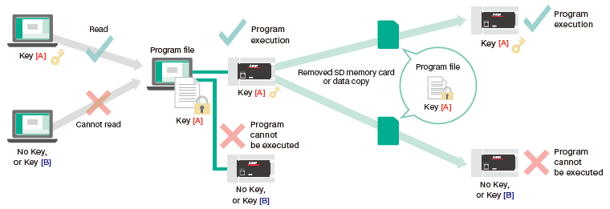
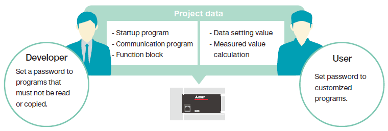
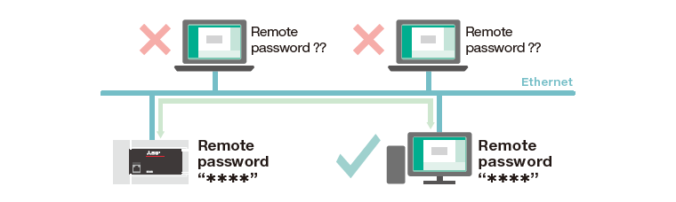

MELSEC iQ-F Series Panduan Memulai Cepat [Edisi Bahasa Ladder] (video)

Panduan Memulai Cepat [edisi bahasa Ladder] (video)
Memprogram modul CPU FX5U
- (1)Sebelum memprogram, buat pengaturan di GX Works3 untuk menghubungkan PC dan modul CPU FX5U.

- (2)Cobalah pemrograman.
- Buatlah program yang membuat Y0 menyala/mati dalam interval satu detik.

- (3)Kompilasi program yang dibuat menjadi kode yang dapat dieksekusi.

- (4)Tulis program yang dikompilasi ke modul CPU FX5U.

- (5)Periksa apakah program beroperasi dengan benar.
- Atur ulang atau matikan daya pada modul CPU FX5U.
|
Metode pengaturan ulang untuk modul CPU FX5U
|
| RESET selesai |
Buat berbagai pengaturan
- (1)Coba atur masukan analog.

- (2)Coba atur keluaran analog.

- (3)Coba atur penghitung kecepatan tinggi.

- (4)Coba atur posisi.

- (5)Coba atur komunikasi Ethernet.
-
- [1]Coba atur parameter.
- Dalam video untuk PLC A dan B, satu-satunya perbedaan adalah nomor port.
PLC A

PLC B

- [2]Cobalah pemrograman.

Jenis fungsi keamanan
- (1)Kunci keamanan
- Menonaktifkan pembacaan dan eksekusi program jika kunci berkas program, PLC, PC, dan PLC tujuan penyalinan tidak cocok.

- (2)Blokir kata sandi
- Kata sandi dapat diatur untuk blok program individual, sehingga pengembang dan pengguna dapat mengatur kata sandi sesuai kebutuhan dari sudut pandang mereka.

- (3)Kata sandi jarak jauh
- Hanya mengizinkan akses komunikasi kepada orang yang mengetahui kata sandinya.

- (4)Kata sandi berkas
- Selain berkas program, kata sandi juga dapat ditetapkan ke parameter, sehingga pengaturan modul individual dapat dilindungi.

| Jika kata sandi tidak diketahui: |
|---|

|
| Ketika kata sandinya diketahui: |

|